| 桂林是世界岩溶峰林景观发育最完善的典型，山清、水秀、洞奇、石美，城在景中，景在城中，城景交融，南宋广南西路提点刑狱、权府事王正功在1201年典试之后的鹿鸣宴上即席赋诗“桂林山水甲天下，玉碧罗青意可参”，从此，“桂林山水甲天下”名扬海内外，直到今天。
辖区内千峰环立，巍峨多姿、青翠娇媚。有的连绵起伏，奇峰一片；有的平地拔起，亭亭玉立。象鼻山似饮水象鼻、老人山如远眺老人、骆驼山象跋涉骆驼，伏波山、叠彩山、独秀峰、塔山等婀娜多姿，栩栩如生。南宋诗人范成大在《桂海虞衡志》中称赞：“桂山之奇，宜为天下第一”。 |
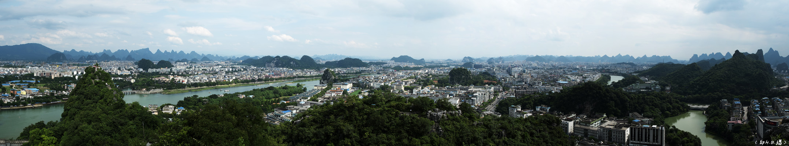 | ||||
| 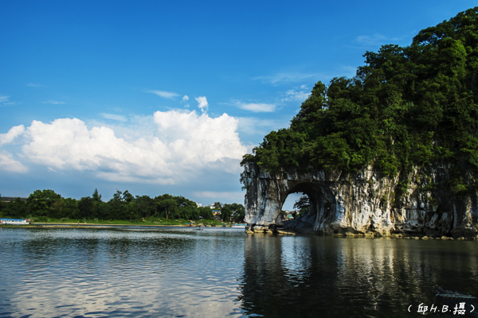 | 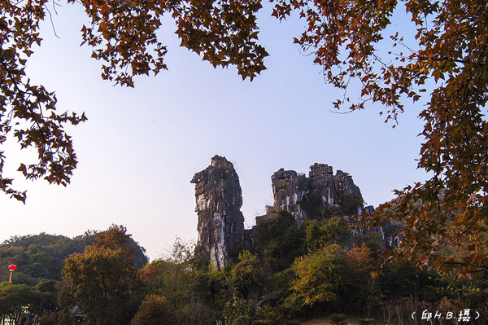 | 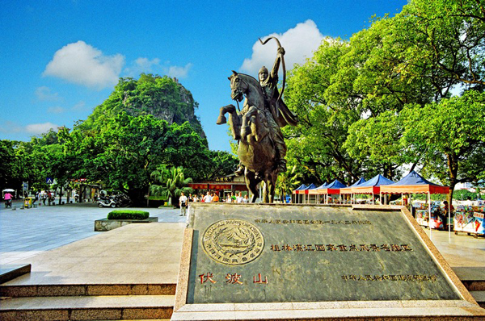 | |||
| 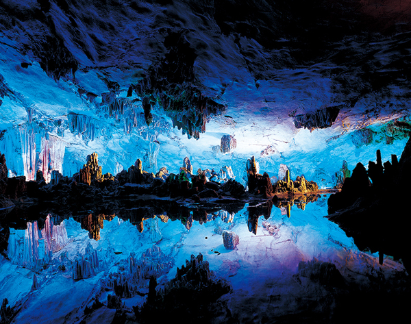 | 桂林无山不洞，无洞不奇。山中有洞、洞中有洞，洞洞相连，纵横交错，上下贯通。有的洞内流水潺潺，泛舟行船曲径通幽；有的大如广场，蔚为壮观。洞内钟乳石笋、石柱、石幔似瓜果、似金谷、似人寰，身临其境，浮想联翩。芦笛岩、七星岩、莲花洞、冠岩等虚无缥缈，宛若仙境，堪称“洞穴瑰宝”。南宋诗人范成大《游栖霞洞》曾感叹：“今朝真作游仙梦，不似骚人赋子虚。”
桂林石头巧夺天工。洞石千姿百态，似人、似物、似飞禽、似走兽；山岩绚丽多彩，或亮如星、或白如玉、或朱纹若花、或晶莹欲滴，奇巧瑰丽，美不胜收。当代作家石顺义《桂林奇石》称：“一千种奇石有一千种风姿，一千种奇石有一千种神秘”。 |
||||
| 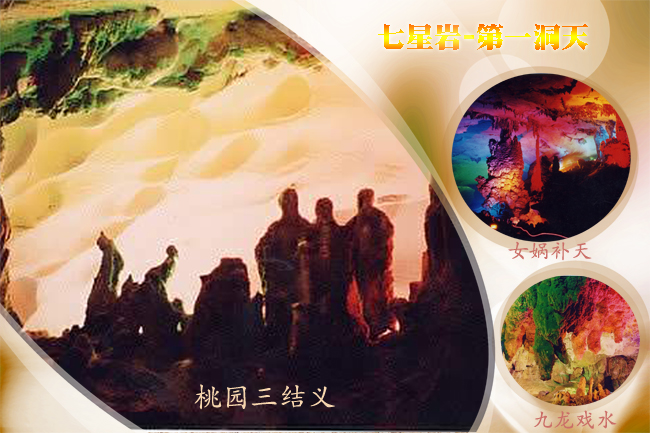 | 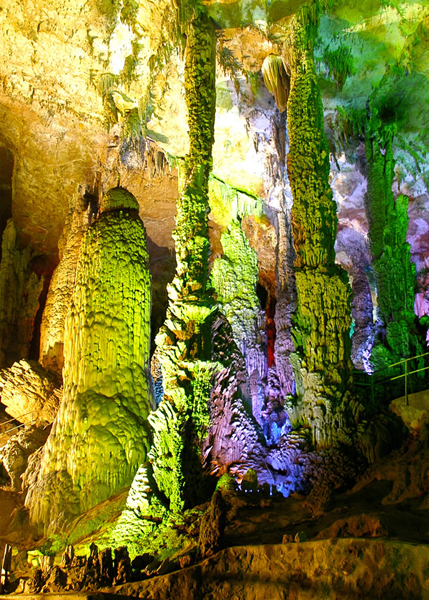 | ||||
| 桂林的水，清澈如练，水波含情。市区大小湖塘数百，如繁星点缀。百里漓江绕城而过，似银河铺泻。奇峰夹岸，碧水潆回，青山浮水，风光秀丽，犹如一幅百里画卷。“深潭、险滩、流泉、飞瀑”佳景叠出，动人心魄。 | |||||
| 桂林城地处漓江河谷冲积平原。唐代筑桂州府（桂林）城，因借漓江与阳江（今称桃花江）交汇之处筑成城廓，东西以漓江与阳江河道构成了城防水系，北借叠彩山、宝积山等山构筑陆上城防，拱卫夹城、子城，客观上形成了山水环抱的城市格局。宋代依山傍水凿池筑城，兴建街市，形成了现有的城市内湖水系（宋护城河）和核心区用地格局。明代以叠彩山、象鼻山为城市轴线，以独秀峰为核心，建靖江王城，城景交融的城市形态基本形成。桂林城市道路与城区中的各座山之间往往都有对景关系，形成的道路线形曲折而有致；沿江湖道路与水道皆成顺应关系，使得临水的街区亦变化有趣。山光、水色与田园、城郭巧妙融汇，空间格局与结构形态独具特色，城在景中，景在城中，形成了桂林“山—水—城”和谐的城市形态。 | 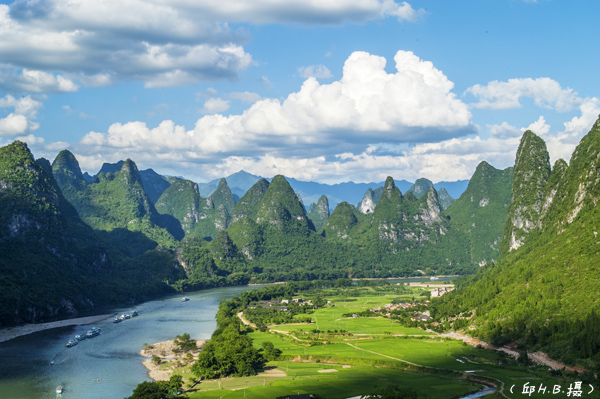 | ||||
| 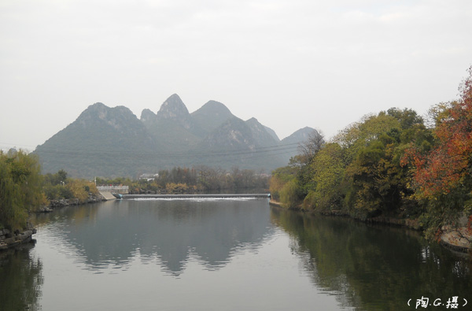 | 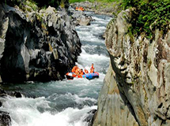 | 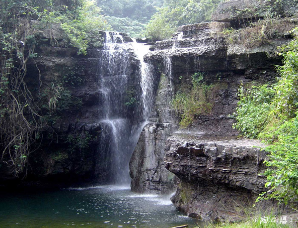 | |||